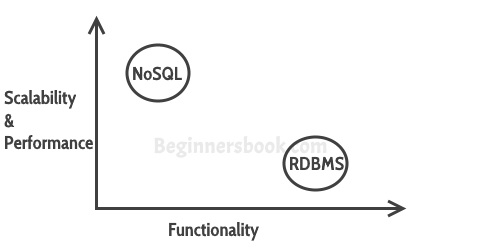

A database Management System provides the mechanism to store and retrieve the data. There are different kinds of database Management Systems:
1. RDBMS (Relational Database Management Systems)
2. OLAP (Online Analytical Processing)
3. NoSQL (Not only SQL)
In this guide, We will discuss NoSQL. NoSQL databases were created to overcome the limitations of relational databases.
What is a NoSQL database?
NoSQL databases are different than relational databases like MQSql. In relational database you need to create the table, define schema, set the data types of fields etc before you can actually insert the data. In NoSQL you don’t have to worry about that, you can insert, update data on the fly.
One of the advantage of NoSQL database is that they are really easy to scale and they are much faster in most types of operations that we perform on database. There are certain situations where you would prefer relational database over NoSQL, however when you are dealing with huge amount of data then NoSQL database is your best choice.
Limitations of Relational databases
1. In relational database we need to define structure and schema of data first and then only we can process the data.
2. Relational database systems provides consistency and integrity of data by enforcing ACID properties (Atomicity, Consistency, Isolation and Durability ). There are some scenarios where this is useful like banking system. However in most of the other cases these properties are significant performance overhead and can make your database response very slow.
3. Most of the applications store their data in JSON format and RDBMS don’t provide you a better way of performing operations such as create, insert, update, delete etc on this data. On the other hand NoSQL store their data in JSON format, which is compatible with most of the today’s world application.
What are the advantages of NoSQL
There are several advantages of working with NoSQL databases such as MongoDB and Cassandra. The main advantages are high scalability and high availability.
High scalability: NoSQL database such as MongoDB uses sharding for horizontal scaling. Sharding is partitioning of data and placing it on multiple machines in such a way that the order of the data is preserved. Vertical scaling means adding more resources to the existing machine while horizontal scaling means adding more machines to handle the data. Vertical scaling is not that easy to implement, on the other hand horizontal scaling is easy to implement. Horizontal scaling database examples: MongoDB, Cassandra etc. Because of this feature NoSQL can handle huge amount of data, as the data grows NoSQL scale itself to handle that data in efficient manner.
High Availability: Auto replication feature in MongoDB makes it highly available because in case of any failure data replicates itself to the previous consistent state.
Types of NoSQL database
Here are the types of NoSQL databases and the name of the databases system that falls in that category. MongoDB falls in the category of NoSQL document based database.
Key Value Store: Memcached, Redis, Coherence
Tabular: Hbase, Big Table, Accumulo
Document based: MongoDB, CouchDB, Cloudant
RDBMS Vs NoSQL
RDBMS: It is a structured data that provides more functionality but gives less performance.
NoSQL: Structured or semi structured data, less functionality and high performance.

So when I say less functionality in NoSQL what’s missing:
1. You can’t have constraints in NoSQL
2. Joins are not supported in NoSQL
These supports actually hinders the scalability of a database, so while using NoSQL database like MongoDB, you can implements these functionalities at the application level.
When to go for NoSQL
When you would want to choose NoSQL over relational database:
- When you want to store and retrieve huge amount of data.
- The relationship between the data you store is not that important
- The data is not structured and changing over time
- Constraints and Joins support is not required at database level
- The data is growing continuously and you need to scale the database regular to handle the data.
Leave a Reply